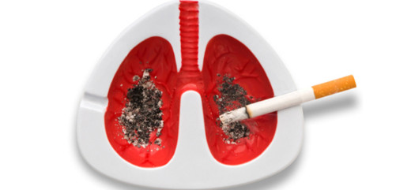

Визначання
Рак легень — це злоякісне новоутворення легень, що посідає перше місце серед всіх злоякісних пухлин. Рак легень може характеризуватись локальним метастазуванням в прилеглі тканинах або інші органи (віддалені метастази). Більшість типів раку легень (так звані первинні ракові захворювання легень) — це карциноми, тобто утворюються з епітеліальних клітин. Основними видами раку є дрібноклітинний рак легені (ДРЛ), також відомий як вівсяноклітинний рак, та недрібноклітинний рак легені.Найбільш поширені симптоми захворювання — кашель втрата ваги та задишка. Клінічні ознаки
На рак легень можуть вказувати наступні ознаки та симптоми:[1] респіраторні симптоми: кашель, кровохаркання, хрипи чи задишка системні симптоми: втрата ваги, лихоманка, погрубшання фалангів пальців, а також перевтома симптоми, викликані місцевим здавлюванням: болі в грудях, болі в кістках, синдром верхньої порожнистої вени, труднощі при ковтанні
Причини
Рак виникає після генетичного пошкодження ДНК. Це генетичне пошкодження впливає на нормальні функції клітини, в тому числі на проліферацію клітин, запрограмовану загибель клітин (апоптоз) та репарацію ДНК. Чим більше пошкоджень, тим більше ризик виникнення раку.[14]
Патогенез
Як і багато інших видів ракових захворювань, рак легень починається з активації онкогенів чи інактивації генів-супресорів пухлин, тобто генів, що подавляють пухлини.[37] Вважається, що онкогени роблять людей більш схильними до захворювання. Протоонкогени, як вважають, перетворюються на онкогени під впливом певних канцерогенів.[38] Мутації протоонкогена K-ras є причиною 10-30% випадків аденокарциноми легень.[39][40] Рецептор епідермального фактора росту (РЕФР) регулює проліферацію клітин, апоптоз, ангіогенез та інвазію пухлин.[39] Мутації і посилення РЕФР є частими явищами при недрібноклітинному раку легень і служать основою для лікування за допомогою РЕФР-інгібіторів. Білок HER2/neu рідше підпадає під негативний вплив.[39] Пошкодження хромосом може призвести до втрати гетерозиготності. Це, у свою чергу, може призвести до інактивації генів-супресорів пухлин. Пошкодження хромосом 3p, 5q, 13q та 17p особливо часто виникає при дрібноклітинному раку легень. Ген-супресор пухлин p53, розташований на хромосомі 17p, підпадає під негативний вплив у 60-75% випадків.[41] Інші гени також піддаються мутації та ампліфікації
Профілактика
Профілактика — це найбільш економічно вигідний засіб зниження темпів розвитку раку легень. У той час як промислові та побутові канцерогени були виявлені і заборонені у більшості країн світу, паління тютюну все ще залишається поширеним явищем. Усунення паління тютюну є одною з головних цілей профілактики раку, тому відмова від паління наразі є важливим профілактичним засобом.[50]
Лікування
Спосіб лікування раку легень залежить від конкретного типу ракових клітин, ступеня розповсюдження та загального стану хворого. Найчастішими методами лікування є паліативна допомога,[65] хірургія, хіміотерапія та променева терапія.[1]